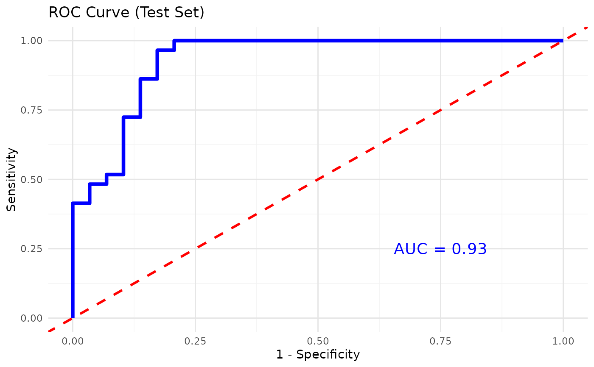
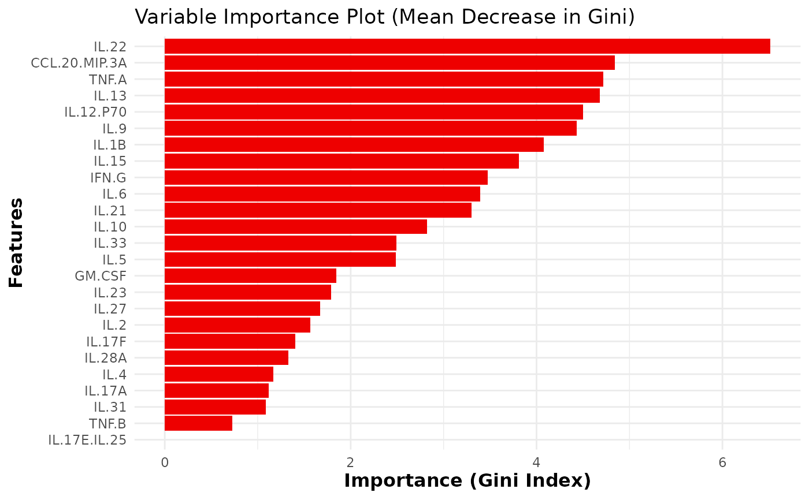
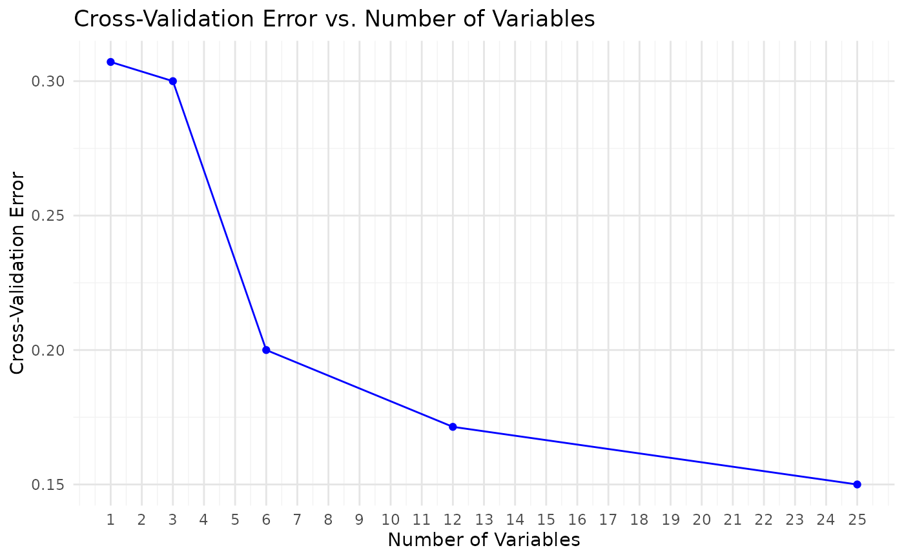

This function trains and evaluates a Random Forest classification model on cytokine data. It includes feature importance visualization, cross- validation for feature selection, and performance metrics such as accuracy, sensitivity, and specificity. Optionally, for binary classification, the function also plots the ROC curve and computes the AUC.
Usage
cyt_rf(
data,
group_col,
ntree = 500,
mtry = 5,
train_fraction = 0.7,
plot_roc = FALSE,
k_folds = 5,
step = 0.5,
run_rfcv = TRUE,
verbose = FALSE,
seed = 123,
cv = FALSE,
cv_folds = 5,
scale = c("none", "log2", "log10", "zscore", "custom"),
custom_fn = NULL
)Arguments
- data
A data frame containing the cytokine measurements. One column should correspond to the grouping variable (the outcome) and the remaining columns should be numeric predictors.
- group_col
A string naming the column in
datathat contains the grouping variable.- ntree
Integer specifying the number of trees to grow. Default is 500.
- mtry
Integer specifying the number of variables randomly sampled at each split. Default is 5.
- train_fraction
Numeric between 0 and 1 giving the proportion of data used for training. The remainder is used for testing. Default is 0.7.
- plot_roc
Logical. If
TRUEand the problem is binary, an ROC curve and AUC will be computed and plotted for the test set. Default isFALSE.- k_folds
Integer specifying the number of folds for
rfcvwhenrun_rfcv = TRUE. Default is 5.- step
Numeric specifying the fraction of variables removed at each step during
rfcv. Default is 0.5.- run_rfcv
Logical indicating whether to run Random Forest cross-validation for feature selection. Default is
TRUE.- verbose
Logical indicating whether to print intermediate results. When
TRUE, training and test performance metrics, confusion matrices and cross-validation details are printed. Default isFALSE.- seed
Optional integer seed for reproducibility. Default is 123.
- cv
Logical indicating whether to perform a separate k-fold classification cross-validation using
caret. Default isFALSE.- cv_folds
Integer specifying the number of folds for classification cross-validation when
cv = TRUE. Default is 5.- scale
Character string specifying a transformation to apply to the numeric predictor columns prior to model fitting. Options are "none" (no transformation), "log2", "log10", "zscore", or "custom". When "custom" is selected a user defined function must be supplied via
custom_fn. Defaults to "none".- custom_fn
A custom transformation function used when
scale = "custom". The function should take a numeric vector and return a numeric vector of the same length. Ignored for other values ofscale.
Value
An invisible list with components:
- model
The fitted
randomForestmodel.- confusion_matrix
Confusion matrix on the test set.
- importance_plot
A
ggplot2object of the variable importance (mean decrease in Gini).- importance_data
A data frame of variable importance values.
- rfcv_result
The
rfcvobject returned whenrun_rfcv = TRUE.- rfcv_plot
A
ggplot2object of cross-validation error versus number of variables, returned whenrun_rfcv = TRUE.- rfcv_data
A data frame summarizing the
rfcverror curve.- roc_plot
A
ggplot2object of the ROC curve for binary classification whenplot_roc = TRUE.- cv_results
A
carettrain object returned whencv = TRUEorNULLotherwise.
Details
The function first coerces the grouping variable to a factor and splits
the dataset into training and test subsets according to
train_fraction. A Random Forest classifier is fit to the training
data using the specified ntree and mtry parameters. The model
performance is assessed on both the training and test sets, and
results are printed when verbose = TRUE. If plot_roc = TRUE and
the grouping variable has exactly two levels, an ROC curve is computed
on the test set and a plot is returned. Variable importance is
extracted and visualized with a bar plot. Optionally, cross-
validation for feature selection (rfcv) is performed and the error
curve is plotted. A separate k-fold classification cross-
validation using caret::train can be requested via cv = TRUE.
Examples
data.df0 <- ExampleData1
data.df <- data.frame(data.df0[, 1:3], log2(data.df0[, -c(1:3)]))
data.df <- data.df[, -c(2:3)]
data.df <- dplyr::filter(data.df, Group != "ND")
cyt_rf(
data = data.df, group_col = "Group", k_folds = 5, ntree = 1000,
mtry = 4, run_rfcv = TRUE, plot_roc = TRUE, verbose = FALSE
)


